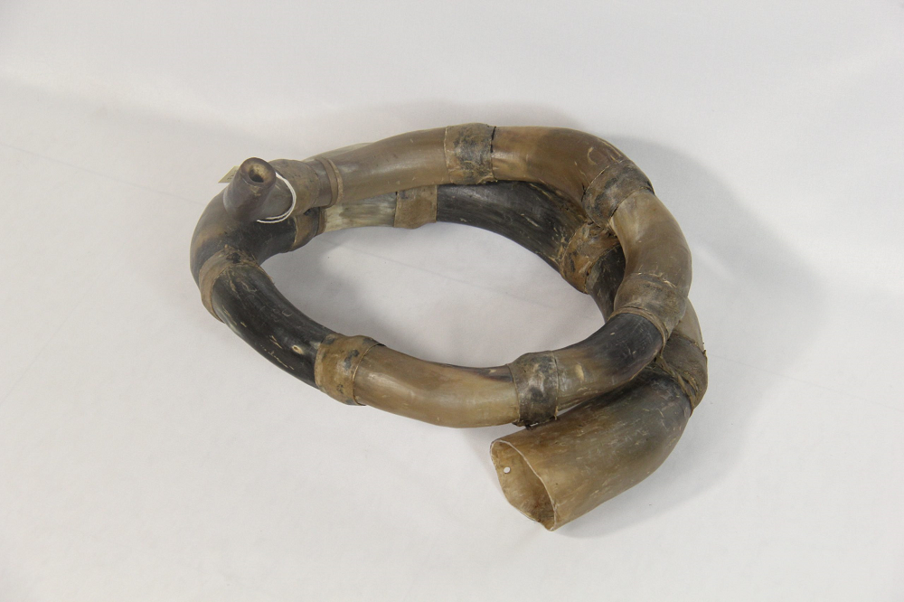

Waqra Phuku
Note 024
Home > Blog A Musician's Log > Note 024
Segmented Horn, Processional Force
In the central and southern Peruvian Andes, the waqra phuku is heard in cattle-marking ceremonies, patron-saint festivals, bull events, and processions. From a distance, the instrument appears to be a single enormous horn curled back upon itself. Its dark surface follows a continuous arc. The mouthpiece enters at one end; the bell opens at the other. It looks as though an animal might have grown it whole.
Up close, the illusion breaks.
The tube is assembled from numerous sections of cattle horn, cut, fitted, fastened, and sealed into a widening curve. Every joint remains visible. A form that appears organic has been constructed piece by piece.
Its name also begins with the horn. Waqra means "horn" in Quechua, while pukuy or phukuy refers to blowing. Regional speech and different systems of transcription have produced waqrapuku, waqra phuku, waqraphuku, wakrapuku, waka waqra, waqla, and several other names.
The spellings vary. The breath enters the horn.
Length Folded into a Circle
A cattle horn provides curvature, hardness, and a naturally expanding bore, but a single horn is short. The waqra phuku extends that geometry by multiplication.
Builders select horns or parts of horns whose diameters can be joined in sequence. Narrow sections form the tube near the mouthpiece. Wider pieces continue the expansion toward the bell. The direction given to each segment determines the final shape: circular, spiral, or undulating, depending on regional practice and the choices of the maker.
Research in Parinacochas, in the Ayacucho department, has documented instruments assembled from approximately twenty to twenty-eight horns. Their internal tube may reach around 1.2 metres even though the completed instrument occupies a much smaller space. One, two, or three turns fold that length into a form that can be carried.
The spiral therefore does more than make the instrument visually imposing. It stores an extended air column inside a compact body.
The seams are equally important. Every junction must continue the bore while resisting air loss. A poor fit interrupts pressure. A secure one allows fragments taken from several animals to function as a single acoustic passage.
The waqra phuku is built from discontinuity and made to sound as continuity.
A Melody Made by the Lips
Organologically, the waqra phuku belongs to the family of natural horns: curved, end-blown labrosones within Hornbostel–Sachs 423.121.2. It may have a mouthpiece made from horn, wood, or metal, although forms without a separate mouthpiece are also documented.
There are no finger holes, valves, keys, or slides. The player's vibrating lips initiate the sound. Breath pressure, lip tension, and the resonance of the tube determine which component of the harmonic series becomes audible.
This does not restrict the instrument to a single pitch. A skilled performer moves among available harmonics, shaping calls and tonadas through changes in embouchure and pressure. The bore establishes the acoustic field, but the mouth must continually negotiate within it. Pitch is produced through muscular control rather than selected by opening a hole or pressing a mechanism.
Length affects that negotiation. In the Parinacochas instruments studied by Carlos Mansilla Vásquez, longer waqra phukus allow certain harmonics to respond more readily, while shorter instruments demand greater effort and control. Builders there also combine thicker bull horn near the proximal end with thinner cow horn farther along the body. The materials are selected and distributed for resistance, response, and tonal balance.
The instrument is therefore tuned before anyone blows it. Horn selection, segment count, curvature, bore progression, mouthpiece, and quality of assembly establish the conditions under which a tonada can exist.
The player completes what the maker has prepared.
Cattle Made Audible
The cattle horn places the waqra phuku unmistakably within post-conquest Andean history. Cattle arrived with European colonization during the sixteenth century. An instrument constructed from their horns cannot be presented as an unchanged pre-Hispanic survival.
Andean trumpet traditions, however, were already ancient. Marine-shell trumpets, ceramic trumpets, and instruments made from other animal materials belonged to pre-Hispanic systems of ritual, signaling, communication, and musical performance. Colonial-period images also show the rapid adoption of European animal horns for sounding purposes.
These histories do not produce a simple genealogy. The waqra phuku cannot be derived securely from a single shell trumpet, ceramic form, deer-horn instrument, or Iberian hunting horn. Each may illuminate part of the field from which the later instrument emerged, but formal resemblance does not establish direct descent.
What the cattle horn does establish is a historical threshold. A newly introduced animal became part of Andean agriculture, exchange, ritual obligation, conflict, wealth, and musical construction. Its horn entered an existing world of powerful aerophones and was reorganized there.
The animal arrived through colonization. The segmented trumpet was made in the Andes.
Sounding the Cattle Cycle
The material returns to the animal through performance.
Across much of the central and southern Peruvian Andes, waqra phukus are associated with cattle marking ceremonies, commonly known as herranza, señalakuy, Santiago, or vacahierruy according to region and language. These events concern identification and ownership, but they also address fertility, reproduction, protection, and the continuity of the herd.
The horn of a dead animal sounds for the future life of the cattle.
Other contexts bring the instrument into patron-saint festivals, carnivals, bull games, and corridas. In Parinacochas, it is prominent during festivities for the Virgen de las Nieves and the bull events that conclude the celebration. In Chumbivilcas, Espinar, Paruro, Yauyos, Huancavelica, Junín, and other areas, its repertory and ceremonial associations take different forms.
The waqra phuku is often played with the tinya, a small double-headed Andean drum held in one hand or suspended from the wrist and struck with a beater. The drum sustains the pulse while the horn carries its short melodic calls, or tonadas, across open space. In parts of Junín, the two instruments are joined by a violin; elsewhere, two horns play together or answer each other.
Its function exceeds accompaniment. The waqra phuku announces moments, separates phases of a celebration, accompanies movement, and makes an approaching group audible before every participant can be seen. A melody may identify a ritual action, a community, a locality, or a stage in the proceedings.
This is processional force: sound used to carry collective action through space.
The instrument does not need chromatic range or rapid melodic movement to achieve it. A few strongly projected tones can orient a crowd, mark an arrival, open a route, or charge a public event with expectation. Repetition extends the signal. The harmonic spectrum gives it penetration. The curved tube turns breath into public presence.
One Name, Several Horns
In 2013, Peru's Ministry of Culture declared the waka waqra, waqra, or waqrapuku part of the nation's Cultural Heritage. The declaration recognized an instrument distributed across a wide area of the central and southern Andes and described its importance in cattle-marking celebrations, religious festivities, and bull events.
That recognition gathered many local forms under one name.
The category is useful, but it can conceal difference. Waqra phukus vary in shape, length, number and selection of horn sections, mouthpiece, repertory, ensemble, terminology, playing technique, and ceremonial authority. Even the distinction between instruments identified as male and female follows different principles in different places. A rule documented in one region should not be turned into a universal description.
The national instrument is consequently a family of situated instruments.
Classification identifies their shared acoustic principle. Heritage policy identifies a shared cultural importance. Neither can replace the local knowledge that determines which horns may be joined, how the tube should curve, which tonadas belong to an occasion, who is entitled to play them, and what their sound announces. The visible segments warn against false uniformity.
What the Horn Carries
The waqra phuku is a natural trumpet, but nothing about its history is simply natural. Cattle were transported across an ocean. Their horns were cut apart. Makers assembled them into forms no animal had carried. Players developed tonadas from a tube without holes or valves. Communities placed those sounds inside the lives of herds, saints, plazas, roads, and collective movement.
Its body records each transformation.
Many horns become one air column. Separate breaths become public sound. An animal introduced through conquest becomes material for an Andean instrument whose voice belongs to the places that made it.
The joints remain visible. The sound crosses them.
Readings
- Bolaños, César; García, Fernando; Roel Pineda, Josafat; and Salazar, Alida (1978). Mapa de los instrumentos musicales de uso popular en el Perú: clasificación y ubicación geográfica. Lima: Instituto Nacional de Cultura, Oficina de Música y Danza.<
- Mansilla Vásquez, Carlos M. (2023). El waqrapuku de Parinacochas, Ayacucho, patrimonio cultural de la nación. Revista de Investigación Rodolfo Holzmann, 2 (2), pp. 80–107.
- Ministerio de Cultura del Perú (2013). Resolución Viceministerial N.° 072-2013-VMPCIC-MC. Lima, 21 October.
Video. From YouTube user Chalena Vásquez.